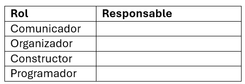

Proyecto N° 2: Energía eólica
I. Presentación:
Argentina es un país rico en recursos naturales, con vastas extensiones de tierra y fuertes vientos, especialmente en regiones como la Patagonia. Esto nos convierte en un lugar ideal para aprovechar la energía eólica, una fuente de energía limpia y renovable. En este proyecto, exploraremos cómo funciona un aerogenerador, que es uno de los dispositivos clave para transformar la energía del viento en electricidad.
A lo largo de este desafío, aplicaremos lo que ya hemos aprendido sobre la energía y el movimiento en los sistemas tecnológicos para diseñar y construir un modelo de aerogenerador utilizando el kit de robótica de Rasti. Este trabajo nos ayudará a comprender mejor la importancia de las energías renovables y cómo podemos contribuir a un futuro más sostenible.
Desafío: Construir un modelo de aerogenerador cuyas hélices puedan ser dirigidas automáticamente.
II. Investigación:
- ¿Qué es la energía eólica?
- ¿Qué es un aerogenerador?
- Dibujar o pegar una imagen de un aerogenerador.
- Observar los siguientes videos para comprender cómo funciona un aerogenerador. Luego, escribir las conclusiones:
- ¿Cuáles son los parques eólicos más importantes de nuestro país? Indica el nombre, ubicación y cuántos aerogeneradores tiene.
III. Planificación:
- Dibujar y completar la tabla de roles. Recordar las responsabilidades que debe cumplir cada integrante del equipo. 
- ¿Qué componentes utilizarán y a qué puertos los deben conectar?
- Dibujar un boceto de la maqueta.
IV. Crear:
- Construir la maqueta siguiendo la guía de armado (5.1 Energía eólica).
- Escribir el algoritmo del programa.
V. Reflexionar y Compartir:
- Explicar el funcionamiento del modelo.
- ¿Qué dificultades encontraron y cómo las solucionaron?
- ¿Qué mejoras le agregarían?
- ¿Cómo calificas el desempeño del equipo?